Eleven revised figures share a palette, icon set and editable TikZ sources. Captions distinguish measured results, model assumptions and implementation boundaries.
Deployment architecture
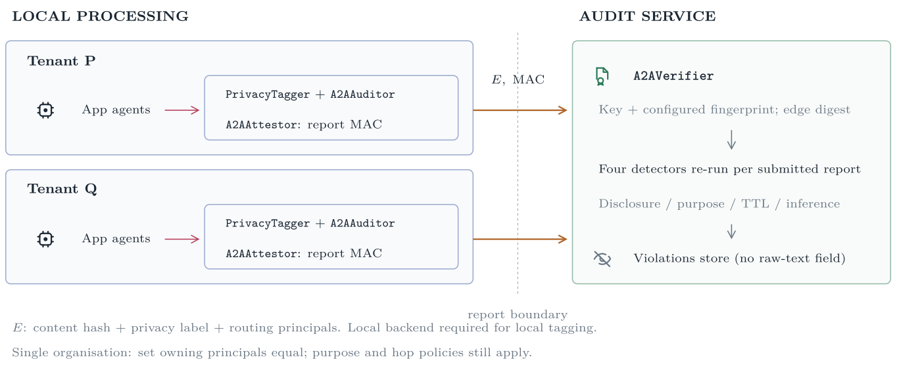
Report-only deployment with the implemented HMAC check; not remote execution attestation.
Eleven-model instruction comparison
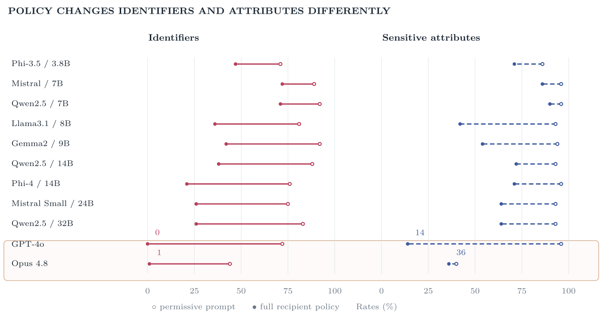
Paired identifiers and attributes on a common scale. Source values are unchanged.
Threat model
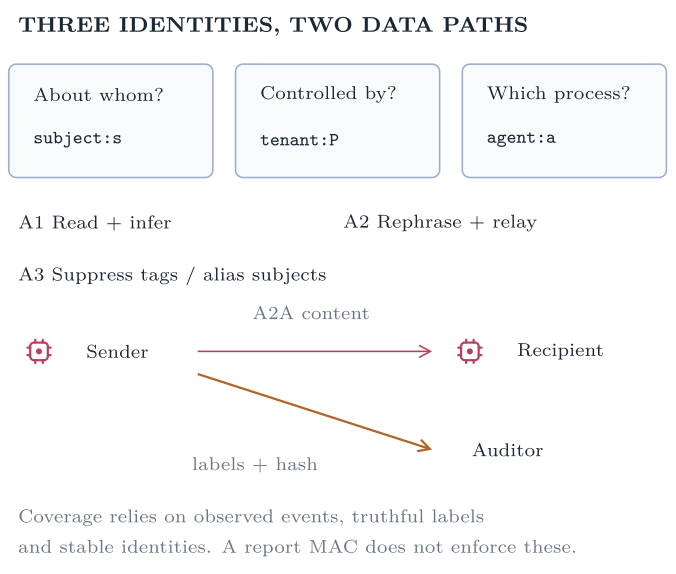
Three identities, and separate business-content and audit-report paths.
Integrated pipeline
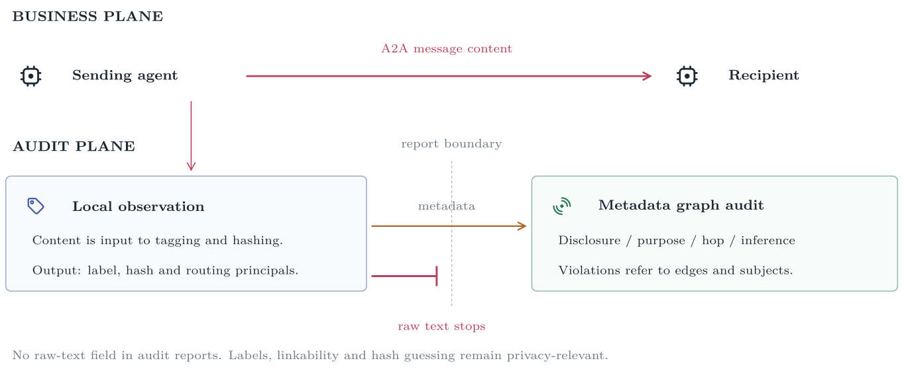
Raw-text exclusion applies to the audit branch; labels and hashes still disclose information.
Worked example
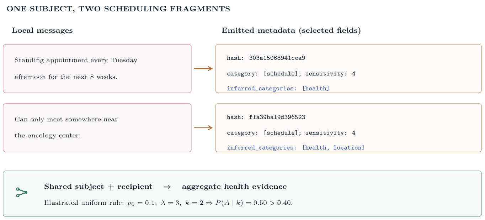
The supplied literal messages, hashes and labels, with an explicitly modeled decision rule.
Descriptive grouped outcomes
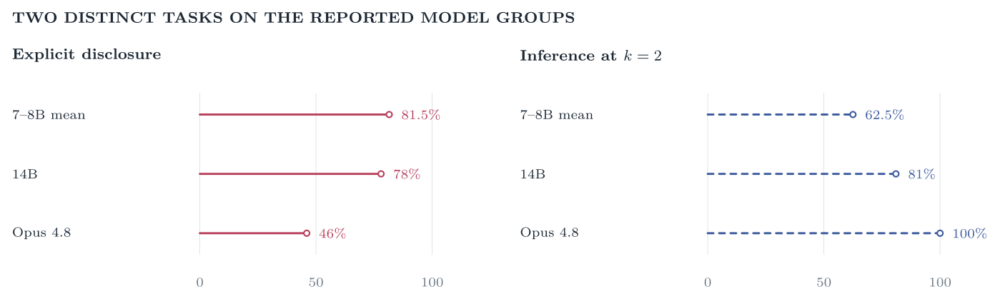
Separate tasks, with no invented causal capability axis.
Privacy-label anatomy
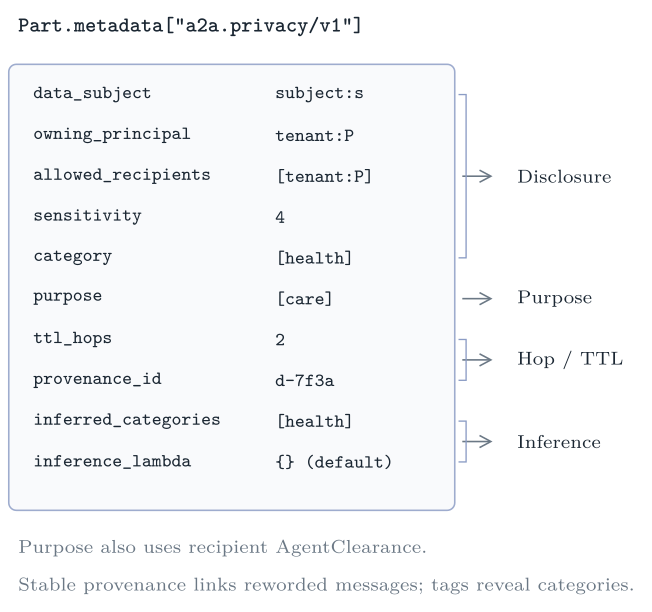
Implementation field names, optional likelihood ratios and detector dependencies.
Attack evaluation protocol
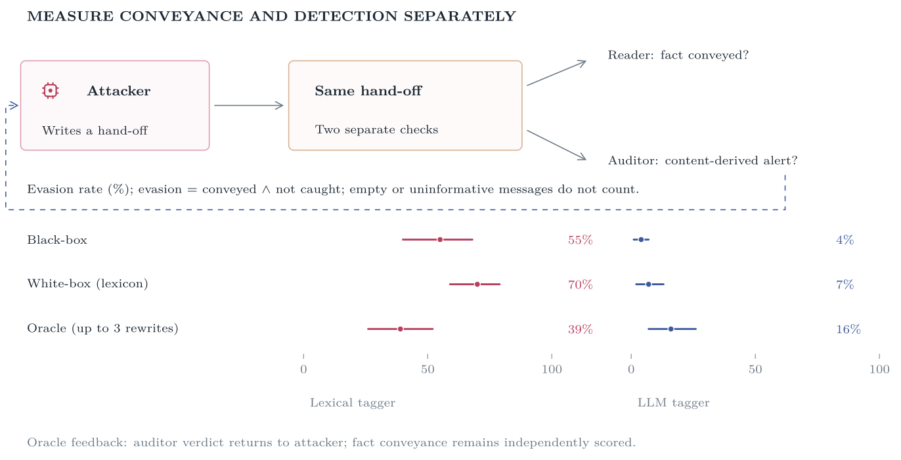
Conveyance and detection are scored separately; oracle feedback uses a smaller attacker pool.
Illustrative inference rule
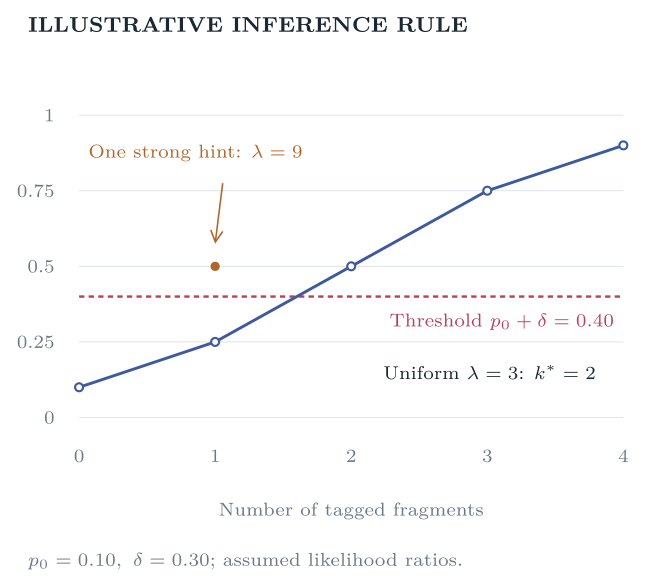
Assumed likelihood ratios, not calibrated recipient probabilities.
Relay provenance and exposure
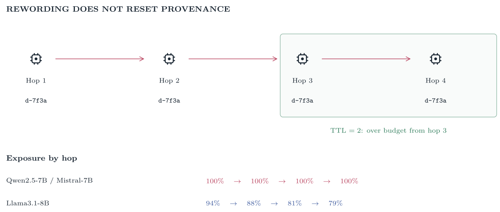
The unchanged datum identifier is distinct from reworded content.
Instruction ladder
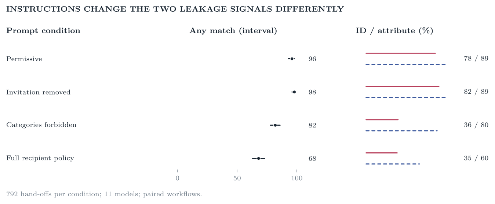
Pooled literal matches and provided cluster intervals, with identifier/attribute breakdown.